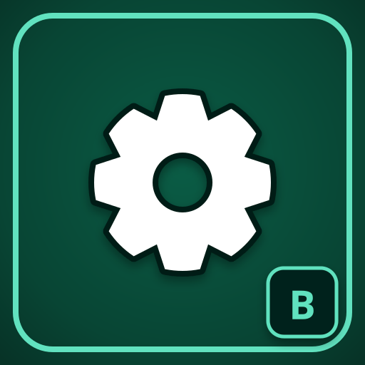
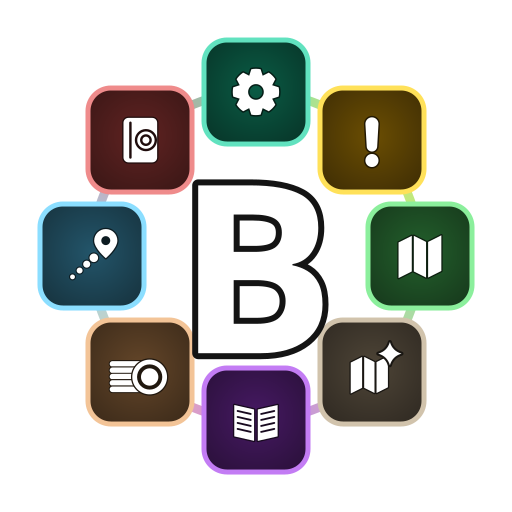
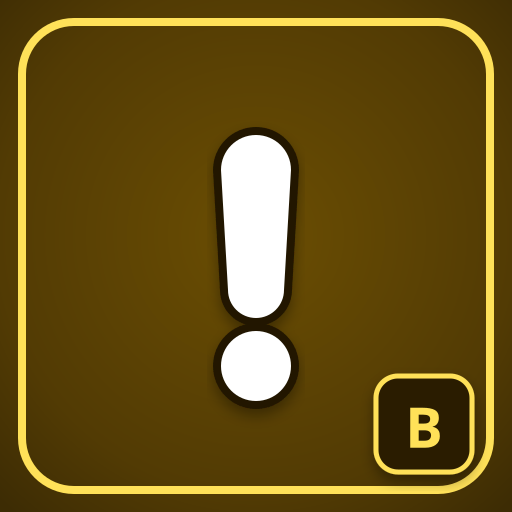
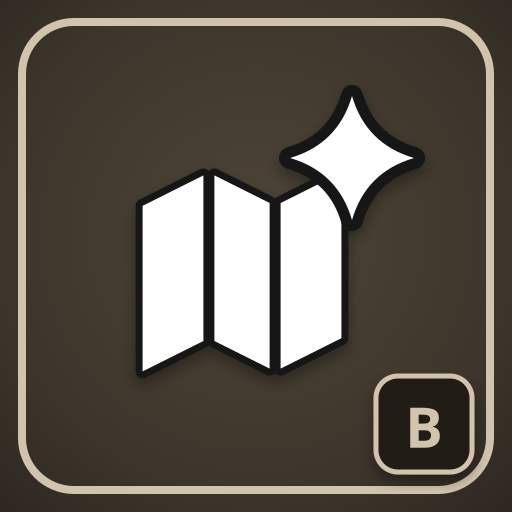
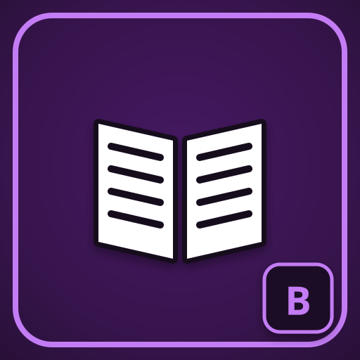
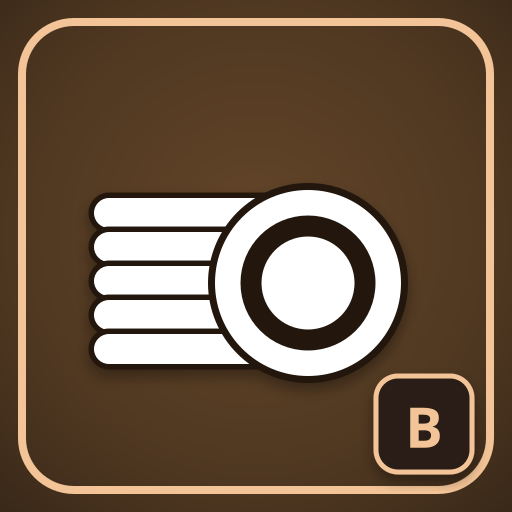
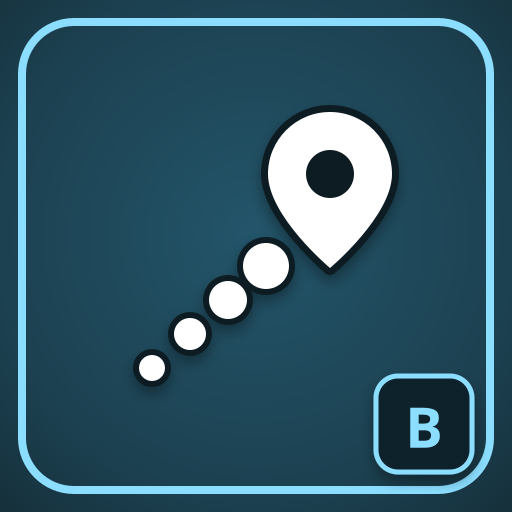
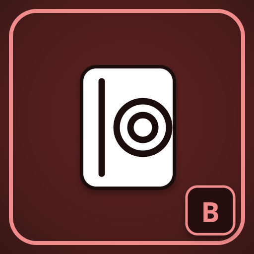
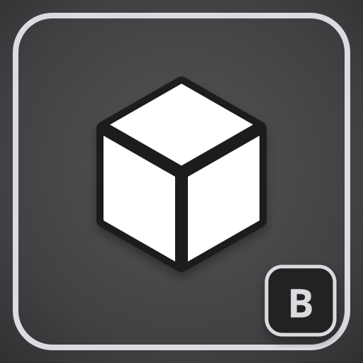

Core
The base every app needs: the settings hub, the launcher at the minimap, one search over quests, NPCs, items and places, and four colour themes.

Quests, map, browser, gold, routes and a book of gold strategies. Every app works on its own, and together they work as one system.
For WoW Forever and retail.
On CurseForge from launch day, 4 November 2026.
Install the suite and turn off what you do not need, in the game's addon list or in the settings hub with /bastians.

The base every app needs: the settings hub, the launcher at the minimap, one search over quests, NPCs, items and places, and four colour themes.

Your quest log with what to do next: quests that suit your level and zone, chains and attunements, and a tracker. Quest texts voiced with Spoken Quests on WoW Forever.
Pins on the world map and the minimap for quests, NPCs, vendors, trainers and gathering spots, with a layer from every other app.

The painted overview map for Bastian's Map: whole continents at a glance. Optional, and the largest download of the suite.

Look up any quest, NPC, item or zone. Everything links: a quest's giver, an item's drops, an NPC's place on the map.

Prices from your own auction scans and vendor visits, farm spots, and your gold over time.

The way there, step by step: flight paths, boats, zeppelins, the tram, portals and your hearthstone, with a dotted line on the map.

Bastian's Gold Rumours: a book of gold strategies to read in game, with today's prices, the places on the map and the travellers who found them. WoW Forever.

The game data behind every app, built for each client: quests with their givers and chains, NPCs, vendors, trainers, flight paths, items, gathering places, recent auction prices and the book's pages. It installs with the suite and gets a new version every day, so prices and the book stay current while the apps change only when their code does.
TomTom for waypoints, on both clients. On WoW Forever also Questie, for spawns our data lacks, and Spoken Quests, for voiced quest texts. The suite works without them and says once what each would add.
Report it on GitHub with the client, the addon and, if the game showed one, the Lua error.
The suite is free software under the GPL-3.0. Its game data comes from these projects, each under its own licence.